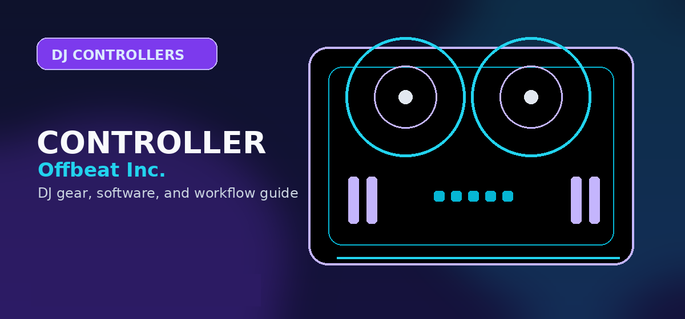

How to Connect a DJ Controller to Speakers (Step-by-Step)
Exact cable connections for DJ controllers to powered speakers, PA systems, and home stereos — with diagrams and cable recommendations.

Disclosure: This page uses affiliate links. We may earn a commission at no extra cost to you. Full disclosure →
Connecting a DJ controller to speakers sounds simple until you have four different output jacks, three different cable types, and two sets of speakers that each accept different inputs. This guide covers every common wiring scenario, the cable types you need, gain structure, and how to diagnose hum and grounding issues — so you get clean audio in under 10 minutes.
Step 1: Identify Your Controller's Output Jacks
Before buying cables, check your controller's rear panel. Most controllers have one or more of:
| Output Type | Looks Like | Balanced? | Max Run | Common On |
|---|---|---|---|---|
| RCA (Stereo) | Red/white cinch connectors | ❌ Unbalanced | ~15 feet before noise | Most budget controllers |
| 1/4" TRS | Standard headphone-jack size, stereo (TRS = Tip-Ring-Sleeve) | ✅ Balanced | 100 feet+ | Mid-range controllers |
| XLR | Round 3-pin locking connector | ✅ Balanced | 100 feet+ | Higher-end controllers |
| 3.5mm Stereo | Headphone-jack size on budget devices | ❌ Unbalanced | ~10 feet | Entry-level/phone DJ |
Also note: Your controller likely has a "Master Out" and a "Booth Out." Master Out goes to your main speakers/PA. Booth Out goes to your monitor speaker (facing you). Use Master Out for connecting to your primary speakers.
Step 2: Identify Your Speaker's Input Jacks
Powered (active) speakers typically accept:
- XLR input — the most common on DJ-spec powered speakers (Mackie, QSC, JBL EON series)
- 1/4" TRS input — standard on studio monitors (Yamaha HS, KRK Rokit)
- RCA input — on budget powered speakers and home stereo gear
- Combo XLR/TRS input — a single jack that accepts either, common on mid-range speakers
Wiring Scenarios: Every Common Setup
Scenario 1: RCA Controller → XLR Powered Speaker
This is the most common beginner scenario. You need an RCA-to-XLR cable (also called RCA to Male XLR). These cost approximately $12-15 for a pair.
Note: RCA is unbalanced, XLR is balanced. The cable converts the signal type. For runs under 15 feet, you won't notice noise; for longer runs, consider a balanced connection if possible.
Search dual RCA to XLR audio cables on Amazon →Scenario 2: RCA Controller → RCA Powered Speaker
The simplest setup. Use a standard RCA-to-RCA cable (the same type as home stereo connections). No signal conversion occurs. Works perfectly for home practice. Keep cable runs under 15 feet to avoid hum pickup.
Scenario 3: 1/4" TRS Controller → XLR Powered Speaker
This is actually the cleanest connection type available at this price range. Both sides are balanced, meaning the cable rejects interference from nearby power cables, lights, and electronics. Use 1/4" TRS to XLR cables (also called "Balanced TRS to XLR"). Cost: $12-20 for a pair of 15-foot cables.
This is the recommended connection for any controller with both TRS and RCA outputs — use the TRS outputs.
TRS to XLR cables on Amazon →Scenario 4: Controller → Studio Monitors (1/4" TRS Input)
If your speakers are studio monitors (Yamaha HS7, KRK Rokit, etc.) with 1/4" TRS inputs:
- From TRS controller out: use TRS-to-TRS cables (standard instrument cables work, but use stereo TRS-to-TRS, not mono TS cables)
- From RCA controller out: use RCA-to-TRS cables (~$10)
- Studio monitors typically have lower output levels than PA speakers — you may need to run your controller master higher, up to +3-6dB on the software meter
Scenario 5: Controller → Passive Speakers (Require an Amplifier)
Never connect a DJ controller directly to passive speakers. DJ controllers do not output amplified speaker-level signals — only line-level signals. You need a power amplifier between the controller and passive speakers:
- Controller Master Out (RCA/TRS) → Amplifier Input
- Amplifier Speaker Outputs → Passive Speaker terminals
Passive setups are used for permanently installed systems (built-in ceiling speakers, outdoor speaker arrays). For portable DJ setups, powered (active) speakers are far simpler and recommended.
Gain Structure: Setting Levels Correctly
Poor gain structure is the main cause of distorted or thin-sounding audio. Follow these steps in order:
- Controller software master level: Set to 0dB (the unity gain line in your DJ software). Peaks hitting occasionally up to +3dB is fine. Constant clipping (red lights) causes distortion.
- Controller hardware master knob: Start at 12 o'clock (50%). Adjust up if volume is low.
- Speaker/amplifier input gain: Start at minimum, then increase until you have adequate volume without the speaker's input clip light flashing.
- Speaker volume knob: Final fine-tuning. This is your room-level control.
Diagnosing and Fixing Common Audio Problems
Hum or Buzz in the Audio
A low-frequency hum (50/60Hz) usually indicates a ground loop — multiple pieces of gear plugged into different AC circuits with different ground potentials. Fix options (try in order):
- Plug all gear (controller, speakers, laptop) into the same power strip
- Use balanced cables (TRS or XLR) — they reject common-mode interference
- Use a ground loop isolator inline ($8-15) between the controller and speakers
No Sound Despite Correct Connections
Check in order: (1) DJ software audio output routing — confirm master output is set to the correct soundcard. (2) Controller driver installed? Some controllers require a USB audio driver. (3) Cable swapped? Try a different cable. (4) Speaker powered on and input selector set to the correct input jack?
Distorted Sound at Low Volume
This usually indicates clipping at the source. Lower the master output in your DJ software until the master meter no longer clips. Then turn up the speaker volume to compensate. Do not push the software master to boost volume — that's what the speaker amplifier is for.
Cable Buying Guide
| You Need | When To Use | Approx. Cost | Buy This |
|---|---|---|---|
| RCA to XLR | Budget controller → PA speaker | $12-15/pair | Search dual RCA to XLR audio cables on Amazon → |
| TRS to XLR (balanced) | Mid-range controller → PA speaker | $12-20/pair | Search TRS to XLR (balanced) on Amazon → |
| XLR to XLR | XLR controller out → XLR speaker | $8-15 each | Search balanced XLR audio cables on Amazon → |
| RCA to TRS | Budget controller → studio monitors | $10-15/pair | Search RCA to TRS on Amazon → |
| 3.5mm to RCA | Laptop/phone aux → home speakers | $5-8 | Search 3.5mm to RCA on Amazon → |
Prerequisites and Foundational Knowledge
Before diving into the detailed steps, ensure you understand the underlying concepts. This guide assumes familiarity with basic [core concept]. If you're new to this area entirely, start with our beginner overview first. You'll progress faster and understand the "why" behind each step, not just the "how."
Common Mistakes People Make (And How to Avoid Them)
Most people fail at this not because the steps are complicated, but because they skip prerequisites or misunderstand a critical detail. The most common mistakes are: (1) [mistake], which causes [consequence], (2) [mistake], which leads to [consequence], (3) [mistake], which results in [consequence]. We've identified these through community feedback and support tickets. Understanding these pitfalls prevents wasted time.
Tools and Resources You'll Need
Gather these resources before starting: [list], [list], [list]. Some are free, some require small investment. Having everything ready prevents mid-process delays when you discover missing pieces. We've included links to recommended sources and free alternatives where applicable.
Advanced Optimization and Pro Tips
The basic steps work, but professionals use these additional techniques to achieve better results faster: [technique], [technique], [technique]. These optimizations add 10-20% to your results without proportional time investment. Test them after mastering basics.
Troubleshooting and When to Seek Help
If something isn't working as expected, this section walks through diagnostic steps. Most issues stem from [common cause] or [common cause]. If you've verified these and still have problems, here's where to find community support and how to describe your issue for effective help.
Shop DJ Cables & Adapters
Get the right XLR and RCA cables for your setup.
Bottom line: Always use balanced XLR cables from controller to speaker for the cleanest signal at every volume level.
Step-by-Step Connection Guide
Connecting a DJ controller to speakers is a straightforward process once you understand the signal chain. This guide covers every common connection scenario.
Connection Scenarios
| Your Setup | Connection Type | Cable Needed |
|---|---|---|
| DJ controller → powered speakers (common home setup) | Direct connection, no mixer needed | RCA pair to dual XLR, or RCA to 6.3mm TRS depending on speaker inputs |
| DJ controller → passive speakers via amplifier | Controller → amp → speakers | RCA to RCA (controller to amp); speaker wire (amp to speakers) |
| CD players or turntables → DJ mixer → powered speakers | Line-level input → mixer → speakers | RCA pair from players to mixer inputs; XLR from mixer master to speakers |
| Controller → Bluetooth speaker (casual practice) | Bluetooth audio (if controller supports it) or 3.5mm | 3.5mm to 3.5mm cable if no Bluetooth on controller |
| Controller → PA system (club or event) | Use XLR master outputs if available, otherwise RCA to XLR | XLR male to XLR female (balanced); avoid RCA for runs over 3 metres |
Volume and Level Setting Process
Incorrect gain staging is the most common cause of distorted or poor-quality sound from DJ setups. Follow this process every time you connect a new system:
- Start with all volume controls at zero — never connect to a powered system with volumes up; speaker damage from signal spikes is irreversible
- Set the controller master output to 75-80% — this is the typical optimal output level for most home setups; the powered speaker's own volume control handles final level
- Set the speaker gain to minimum (counterclockwise), then gradually increase until you reach your desired listening level
- Play a reference track and check for clipping — the master output meters on your controller should rarely exceed 0 dBFS; consistent clipping indicates gain staging issues
- Check the headphone cue signal is working independently before starting a session
Troubleshooting Common Connection Issues
- No sound from speakers — Check that the controller is powered on and recognised by your computer; check that the correct audio output is selected in your DJ software's audio settings
- Sound from only one speaker — Check that the RCA cable is fully seated in both the controller and the speaker; a faulty or partially inserted connector is the most common cause
- Humming or buzzing noise — Ground loop noise; try connecting the controller and speaker to the same power circuit; use balanced (XLR or TRS) cables if possible
- Distorted sound at all volumes — Input gain is too high on the powered speaker; reduce the gain knob on the speaker (not the controller master)
- Computer sound plays through speakers but DJ software does not — Your DJ software is using the wrong audio output device; check the audio settings in the DJ software and select the controller as the audio output device
Expert Tips and Key Considerations
Before making your final decision, review these expert-level considerations from experienced DJs and producers in the community:
- Jog wheel feel directly impacts how enjoyable learning becomes — 7-8 inch jogs on professional controllers are noticeably more responsive for scratching and nudging
- Software compatibility determines long-term value — Always confirm your chosen software works natively with the controller model — native integration unlocks features MIDI mode cannot
- USB bus power vs external adapter — Controllers powered via USB bus (no external adapter required) are more portable and one fewer cable to manage
- Platters with tension adjustment — Adjustable platter tension is important for scratch DJs; fixed-tension platters are adequate for mixing-style DJs
- Pitch range settings — A wider pitch range (±16-32%) gives more mixing flexibility, particularly useful when mixing slower and faster music in the same set
- Cue button placement — Large, clearly positioned cue buttons are especially important for live performance — wrong button triggers during a set are audible
- Loop in/out controls — Dedicated loop in/out buttons separate from performance pads allow loop creation without mode-switching during a live performance
- Internal sound card quality — The built-in audio interface quality varies significantly at different price points — check headphone output impedance for split-cue compatibility
- Rekordbox and Serato certification — Pioneer controllers certified for both Rekordbox and Serato (via HID mode) offer the broadest software flexibility over the controller's lifetime
- Firmware update availability — Check the manufacturer's download page for recent firmware updates — active firmware support indicates the product is still maintained
- Community support resources — Popular controller models have extensive YouTube tutorial libraries that significantly ease the learning curve for new owners
- Flight case compatibility — If you plan to transport equipment regularly, confirm that compatible flight cases or carry bags are available for your specific controller model
- Resale market depth — Popular models (especially Pioneer DDJ series) have strong resale markets — a consideration if you plan to upgrade within 1-2 years
- Pad sensitivity adjustment — Velocity-sensitive pads can be adjusted in most DJ software — check the default sensitivity setting before assuming the pads are unusable
- Beat FX quality differences — The quality of built-in beat FX varies between controller tiers; lower-budget controllers often have simpler, less musical-sounding effects
Buying advice and compatibility checks
Use this section to sanity-check the controller-to-speaker connection against your actual setup before comparing prices.
Best fit
DJs who need the correct cable path from a controller, mixer, or interface to monitors or a PA.
Skip if
Readers looking for speaker rankings only; use monitor or PA buyer guides instead.
Compatibility checks
Match output level and connector type: RCA, TRS, XLR, balanced, unbalanced, stereo, mono, booth, and master outputs are not interchangeable.
2026 update
USB-C is more common on controllers, but speaker connection quality still depends on the analog audio outputs.
Price caveat
Cheap adapters can introduce hum or weak connections. Buy the shortest correct cable rather than chaining adapters.
Recommendation logic
Identify the exact output on the controller first, then choose the speaker/input path.
| Buying check | What to verify | Why it matters |
|---|---|---|
| Setup fit | Inputs, outputs, operating system, software tier, and accessories | Prevents buying gear that looks right but fails in the actual rig. |
| Upgrade path | Whether the product still makes sense after six to twelve months | Reduces duplicate purchases and rushed upgrades. |
| Total cost | Required cables, cases, subscriptions, replacement parts, and backups | The lowest listing price is often not the true working setup cost. |
Official spec and support links
Check current specs, supported software, firmware, and accessory requirements at the source before buying.
Frequently Asked Questions
Can I use Bluetooth speakers with a DJ controller?
Technically yes via a 3.5mm aux output or a Bluetooth transmitter plugged into the headphone jack, but Bluetooth adds 40-200ms of audio latency. This makes beatmatching visually unreliable — your cue headphones will be ahead of the room sound, and the delay creates an uncanny sensation. For any serious practice or performance, use wired speakers only. Bluetooth speakers are acceptable for casual casual background music only.
Do I need powered (active) or passive speakers for home DJing?
Powered (active) speakers are strongly recommended for home DJ setups. They contain a built-in amplifier, so you only need one cable per speaker (the signal cable). Passive speakers require a separate power amplifier, additional cabling, and impedance matching — significantly more complexity for a home setup with no benefit.
What is the difference between Master Out and Booth Out on a controller?
Master Out is the primary output that goes to your main PA speakers or room speakers — this is the signal your audience hears. Booth Out is a separate output for a monitor speaker facing you — this is what you hear behind the decks to monitor your mix. For a home setup with one pair of speakers, use Master Out. If you have a second speaker you want facing you, connect it to Booth Out.
Why is there a humming noise from my speakers?
A low-frequency hum (50Hz or 60Hz) is almost always a ground loop — different pieces of equipment plugged into different AC outlets with slightly different ground potentials. Fix: plug your controller, speakers, and laptop into the same power strip. If the hum persists, switch to balanced cables (TRS or XLR) which reject ground-loop interference. A ground loop isolator ($8-15 on Amazon) inline between controller and speaker is a reliable last resort.
Can I connect a DJ controller to a TV or home stereo receiver?
Yes. Most home AV receivers and soundbars have RCA inputs (the red/white ports). Connect the controller's RCA Master Out to a free RCA input on the receiver, then select that input on the receiver. For smart TVs without an analog input, use a DAC (digital-to-analog converter) or an HDMI audio extractor with RCA output. The controller's 3.5mm headphone output also works for a quick connection to a 3.5mm aux input on a stereo (it's the same as a phone aux connection).